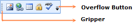

Figure 1105: ToolBarAdv
· The Overflow Button is the ToggleButton, when you click this OverflowPanel will be displayed.
· The Gripper is used to drag the ToolBarAdv to change its Band.,You can float and dock the ToolBarAdv by clicking the gripper and dragging the ToolBarAdv, When the ToolBarAdv is hosted in ToolBarManager.